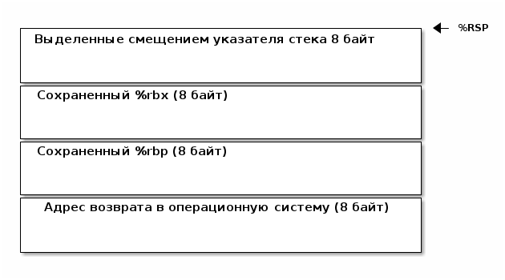

Анализ ассемблирования и сборки Linux-программы
Table of Contents
Интро
В операционной среде, обеспечивающей поддержку Си, имеется возможность передать аргументы или параметры запускаемой программе с помощью командной строки.
В момент запуска программы функции main передаются два аргумента.
- В первом, обычно называемом argc (сокращение от
argument count), стоит количество аргументов, заданых в командной строке. - Второй параметр, называемый
argv(отargument vector), является указателем на массив указателей на строки, содержащих сами аргументы.
Ассемблерный код
Чтобы получить точку отсчета, нагуглим минимальный пример на языке Си, который осуществляет обрабоку аргументов командной строки. Вот он:
#include <stdio.h> void main (int argc, char * argv[]) { while (--argc > 0) { printf("%s\n", argv[argc]); } }
Разберем пример по шагам.
В первой строчке мы подключаем билиотеку стандартного ввода-вывода, которая нужна нам для вывода на экран.
Во второй строке мы определяем функцию main, которая принимает два параметра:
- число (int) параметров командной строки
argc - массив указателей на строки
argv
В третьей строке мы определяяем цикл while, который будет выполняться до тех пор,
пока argc будет больше нуля. В этой же строке мы говорим, что перед тем как
сравнивать argc с нулем, мы уменьшаем его на единицу: --argc. Двойной минус -это
операция префиксного декремента. СНАЧАЛА переменная уменьшается на 1, и только после
этого используется в выражении.
Таким образом, здесь осуществляется выполнение тела цикла пока декрементируемая
переменная argc не станет равной нулю. В теле цикла мы вызываем функцию printf. Она
будет вызвана на единицу меньше раз, чем значение argc.
При вызове мы передаем функции printf форматную строку в первом аргументе и адрес
начала каждого параметра во втором аргументе. Этот адрес каждый раз разный - мы
вынимаем его из массива argv по индексу argc. Индекс на каждой итерации уменьшается
на единицу, поэтому мы выводим параметры командной строки от последнего к первому.
Скомпилируем пример и убедимся, что все работает:
gcc -g -o argv argv.c
После выполнения этой команды должен появится испольняемый файл argv, которы мы тут
же запускаем, разумеется с параметрами командной строки. Он должен нам вывести их в
обратном порядке:
./argv this is params from command line
line
command
from
params
is
this
Анализ ассемблерного листинга
Получим ассемблерный листинг, чтобы понять как это происходит на нижнем уровне. Мы можем использовать 32-разрядную или 64-разрядную архитектуру, в зависимости от того, какой процессор имеем. 64-разрядный исполняемый файл невозможно запустить на 32-разрядной архитектуре, но мы будем рассматривать в первую очередь код, полученный для него, т.к. для наших учебных целей он обладает краткостью и более понятен.
Итак, скомпилируем нашу программу в ассемблерный листинг:
Вариант для 32-разрядной архитектуры:
gcc -S -m64 -O1 -o argv.s argv.c
Вариант для 64-разрядной архитектуры:
gcc -S -m32 -O1 -o argv.s argv.c
Получаем следующий файл argv.s (я удалил некоторые директивы, чтобы сократить
размер):
.file "argv.c" .text .globl main .type main, @function main: .LFB23: pushq %rbp pushq %rbx subq $8, %rsp movq %rsi, %rbp leal -1(%rdi), %ebx testl %ebx, %ebx jle .L1 .L4: movslq %ebx, %rax movq 0(%rbp,%rax,8), %rdi call puts@PLT subl $1, %ebx jne .L4 .L1: addq $8, %rsp popq %rbx popq %rbp ret .LFE23: .size main, .-main .ident "GCC: (Ubuntu 6.2.0-5ubuntu12) 6.2.0 20161005" .section .note.GNU-stack,"",@progbits
Итак, что мы тут видим? Исполнение нашего кода начинается с метки main. До вызова
main происходит инициализация библиотек поддержки, о которых мы скоро поговорим. В
них и определяется метка _start, которая будет точкой входа в программу
Первое что происходит - сохраняются в стек регистры %rbp и %rbx. На 64-разрядной
процессорной архитектуре каждый из этих регистров занимает 64 бита, т.е. 8 байт.
Затем, мы вычитаем из регистра указателя стека %rsp константу 8. Это соответствует
резервированию еще 8 байт в стеке. Теперь стек выглядит так:

Следующим шагом мы делаем команду movq %rsi, %rbp, которая перемещает содержимое
регистра %rsi в регистр %rbp. Забегая вперед, можно сказать, что скоро станет
очевидно, что операционная система перед запуском программы поместила в регистр rsi
указатель на что-то связанное с командной строкой. Интересно что? Посмотрим, что будет
дальше, и мы найдем ответ на этот вопрос.
Следующей командой leal -1(%rdi), %ebx мы загружаем в регистр %ebx число, которое
на единицу меньше, чем значение в регистре %rdi. Очевидно, что это и есть уменьшение
переменной цикла (которая в сишном коде у нас называется argc) на единицу. Таким
образом, мы можем заключить, что указатель на количество аргументов строки операционная
система при запуске программы помещает в регистр %rdi.
Следующей командой мы проверяем равенство переменной цикла нулю. Команда test
объединяет возможности команд AND и СМР. Как команда and, она выполняет объединение
по логическому "И" соответствующих бит операндов; как команда смр, она изменяет
только состояния регистра flags, а не результат. Здесь по логическому "И"
сравнивается регистр %ebx сам с собой. Только в том случае, если %ebx содержить
ноль, в регистре флагов будет выставлен бит ZF (zero flag, флаг нуля) в единицу. В
противном случае флаг будет равен нулю.
Следующая команда условного перехода jle .L1 (jump if less or equal) проверяет этот
бит и если он выставлен в единицу, осуществляется переход на адрес, соответствующий
метке .L1. Эта ситуация возникает тогда, когда у нас нет параметров командной
строки. Когда параметров командной строки нет, операционная система помещает в массив
параметров только имя программы - этот механизм нужен для того, чтобы программа могла
узнать свое имя, в случае если ее исполняемый файл будет переименован.
В случае отсутствия параметров, при старте программы в регистре %rdi будет
единица. Мы вычитаем из этого регистра единицу, записывая результат в %ebx в одной
команде leal -1(%rdi), %ebx. Потом командой testl %ebx, %ebx проверяем %ebx на
ноль, и если он равен нулю - процессор выставляет ZF в 1, и мы переходим на метку
.L1
Сходим туда и посмотрим, чем все закончится.
Мы видим, что мы добавляем к %esp констату 8, после чего восстанавливаем %rbx и
%rbp, приводя стек в то состояние, в котором он был при запуске программы. У нас в
стеке теперь лежит только адрес возврата. После чего вызывается команда ret, которая
возвращает нас из функции main в код, который вернет управление в операционную
систему.
Что же будет, если мы все-же введем несколько параметров командной строки? Тогда
команда jle не перебросит нас на метку .L1, а вместо этого мы продожим
исполнение. И следующая наша команда movslq %ebx, %rax скопирует содержимое регистра
%ebx в %rax. Как мы помним, несколько раньше мы загрузили в %ebx уменьшенное на единицу
количество параметров командной строки. Теперь оно будет и в %rax. Надо отметить, что
%rax содержит 8 байт, а %ebx - четыре. Старшие разряды будут заполнены командой
movslq нулями. Это предохраняет нас от получения некорректного результата, если в
старших разрядах %rax осталось какое-то предыдущее значение.
Следующая команда movq 0(%rbp,%rax,8), %rdi поместит в регистр %rdi содержимое
адреса, который будет вычислен выражением 0+%rbp+($rax*8).
Как ассемблер понимает, что мы хотим вычислить адрес, а не скопировать содержимое
регистров и число в %rdi? Ответ на этот вопрос вынесем в отдельный раздел Дизассемблирование в уме
Вернемся к анализу кода и напомним снова, что лежит 0(%rbp,%rax,8), чтобы понять, что
это означает.
Итак, в %rax лежит то, что ранее было в %ebx и проверялось на равенство нулю и в
случае успеха проверки завершало программу. Значит, %rax содержит счетчик оставшихся
параметров командной строки. Он используется в качестве индекса внутри массива, каждый
элемент которого указывает на один из параметров, переданных программе в командной
строке. Индекс умножается на 8 - это размер указателя в байтах в 64-битной архитектуре.
В %rbp лежит то, что ранее было в %rsi, и, очевидно, это сформированный
операционной системой указатель на буфер, в котором лежит массив байтов, каждый из
которых является указателем на следующий параметр командной строки. Таким образом,
массив указателей нужен для того чтобы найти адреса всех параметров командной строки.
Числовое значение перед скобкой (равное здесь нулю) называют смещением в этом виде
адресации, называемой косвенная регистровая базовая индексная адресация со смещением.
Косвенная регистровая базовая - значит что один из операндов будет регистром,
значение в котором будет использовано как адрес в памяти, откуда будет прочитано или
куда будет записано значение.
Примером базовой регистровой адресации будет команда movq (%rbp), %rdi. В отличии
регистровой адресации, например movq %rbp, %rdi (без скобок), которая пересылает
содержимое регистра %rbp в %rdi, команда movq (%rbp), %rdi пересылает значение
находящееся по адресу, размещенному в регистре ~%rbp. Таким образом скобки служат
указанием на то, что будет выполнено обращение к памяти.
Базовая - означает, что адрес будет отсчитываться от базы, в качестве которой может
быть использован регистр, оканчивающийся на bx, si или di. Это важно потому что
кроме базовой существует абсолютная прямая адресация, в которой адрес прямо задан
константой в команде: movq (0x1234), %rdi. В качестве константы может выступать
метка, которуя будет преобразована в константу при ассемблировании: movq ($variable),
%rdi. Это режим адресации надо отличать от непосредственной адресации (без скобок),
в которой константа пересылается без обращения к памяти: movq $variable, %rdi - в
%rdi попадает адрес "variable" а не ее содержимое.
Индексная - говорит нам о том, что к базовому адресу будет прибавлен "индекс",
который можно разместить в регистре, оканчивающемся на si или di. Собственно si
обычно означает "source index", адрес источника, а di - "destination index", адрес
назначения.
И, наконец, со смещением - значит, что полученный адрес будет смещен на какое-то
количество байт, заданное в команде. У нас там ноль.
Подробнее о режимах адресации можно прочесть тут: http://asmworld.ru/uchebnyj-kurs/014-rezhimy-adresacii/ Только там используется другой формат записи команд, в котором источник и приемник поменяны местами и скобки квадратные, да и записываются несколько иначе.
Следующая команда call puts@PLT как раз принимает указатель на строку,
заканчивающуюся нулем, в этом регистре! По соглашению строки заканчиваются нулем
(байтом равным 0x00), чтобы можно было определить конец строки. puts@PLT - это метка
начала процедуры puts, определенной в библиотеке, которую мы подключаем с помощью
компоновщика на несколько разделов позже.
После ее выполнения (и вывода строки на экран) регистр %ebx будет уменьшен на единицу:
subl $1, %ebx. Эта операция взведет флаг ZF если результат стал нулем. И тогда
следующая команда jne .L4 перебросит нас на метку .L4 если этого НЕ
произошло. Таким образом цикл будет повторяться пока не кончатся все параметры.
Полезная ссылка: http://eax.me/assembler-basics/
Дизассемблирование в уме
Рассмотрим, как преобразовать команду movq 0(%rbp,%rax,8), %rdi в машинный код и
обратно.
Воспользовавшись дизассемблером или отладчиком можно увидеть, что ассемблер преобразует
эту команду в последовательность байт машинного кода 48 8b 7c c5 00, где:
48является префиксом размера операнда и означает "64 Bit Operand Size" http://ref.x86asm.net/geek.html#x48 Что же такое префикс команды? Когда вышли первые процессоры архитектуры x86 у них размер регистров был 16 бит (2 байта). Со следующим поколением размер увеличился вдвое. Но систему кодирования команд менять было нельзя, иначе программы, скомпилированные для старых процессоров не заработали бы. Поэтому, чтобы получить преимущества от нового размера, но оставить совместимость ввели префиксы команд, такие, как префикс размера операнда, который мы здесь видим. Эти префиксы не совпадали ни с одной ранее определеной командой, но модифицировали способ исполнения следующей за префиксом команды. Такой подход был использован и для следующего удвоения размеров регистров, что несколько затрудняет ассемблирование "в уме". Строго говоря существует еще множество других префиксов, и команда может одновременно иметь несколько префиксов, о чем можно прочитать например здесь: https://habrahabr.ru/company/intel/blog/200598/ и здесь: https://habrahabr.ru/post/128042/8bкод командыMOV r16/32/64 r/m16/32/64, т.е. команды, перемещающей из памяти в регистр (в интеловском формате операнды идут в обратном порядке) http://ref.x86asm.net/geek.html#x8B Одна мнемоническая командаmov, в зависимости от того с какими операндами она работает, может ассемблироваться в разные коды операций.- Дальше следует байт режима адресации
modr/m. Значение этого байта определяет используемую форму адреса операндов. Операнды могут находиться в памяти, в одном, или двух регистрах. Если операнд находится в памяти, то байтmodr/mопределяет компоненты (смещение, базовый и индексный регистры), используемые для вычисления его эффективного адреса. В защищенном режиме (это наш случай) для определения местоположения операнда в памяти может дополнительно использоваться байтSIB(Scale-Index-Base – масштаб-индекс-база). Байтmodr/mв нашем случае имеет значение7c=0111 1100) и состоит из трех битовых полей:- поле
mod(биты 7 и 6) - определяет количество байт, занимаемых в команде адресом операнда. Полеmodиспользуется совместно с полемr/m, которое указывает способ модификации адреса операнда "смещение в команде". К примеру, еслиmod=00, это означает, что поле смещение в команде отсутствует, и адрес операнда определяется содержимым базового и (или) индексного регистра. Какие именно регистры будут использоваться для вычисления эффективного адреса, определяется значением этого байта. Еслиmod=01, как в нашем случае, это означает, что поле "смещение" в команде присутствует, занимает 1 байт и модифицируется содержимым базового и (или) индексного регистра. Еслиmod=10, это означает, что поле смещение в команде присутствует, занимает 2 или 4 байта (в зависимости от действующего по умолчанию или определяемого префиксом размера адреса) и модифицируется содержимым базового и (или) индексного регистра. Еслиmod=11, это означает, что операндов в памяти нет: они находятся в регистрах. Это же значениеmodиспользуется в случае, когда в команде применяется непосредственный операнд; - поле
reg(биты 5,4,3) определяет либо регистр, находящийся в команде на месте операнда-приемника (destination), либо возможное расширение кода операции. По таблице, размещенной тут: http://wiki.osdev.org/X86-64_Instruction_Encoding#Registers мы можем найти, что нашему полюreg=111соответствует регистр%rdi. - поле
r/mиспользуется совместно с полем mod и определяет либо регистр, находящийся в команде на месте первого операнда (еслиmod=11, это не наш случай), либо используемые для вычисления эффективного адреса (совместно с полем смещение в команде) базовые и индексные регистры. В нашем случае, когдаmod= 01 вместе сr/m= 100 в 64-разрядном режиме значение операнда источника будет определяться байтом[SIB + disp8], гдеdisp8- множитель на который будет умножен индексный регистр, определенный в байтеSIB.
- поле
- Байт
SIB, который идет дальше имеет значениеc5=1100 0101. Он поделен на три секции. По справке http://wiki.osdev.org/X86-64_Instruction_Encoding#SIB можно видеть что:SIB.scale, биты 7 и 6 определяют масштабный коэффициент, котороый в нашем случае (11) равен максимуму, т.е. 8, что значит что мы используем полномасштабные 8 байтовые регистры%r**.SIB.index, биты 5,4,3 определяют регистр индекса. По таблице Registers http://wiki.osdev.org/X86-64_Instruction_Encoding#Registers мы видим, что значению 000 соответствует регистр%eaxSIB.base, биты 2,1,0 определяют регистр базы. Нашему значению 101 в той же таблице соответствует регистр%rbp.
- Последний байт задает смещение, которое равно нулю. На его
необходимость указывает поле
modбайтаmodr/m, о чем мы говорили ранее.
Таким образом мы дизассемблировали в уме (на самом деле по справочнику) команду movq
0(%rbp,%rax,8), %rdi и убедились, что она соответствует тому, что написано в
мнемонической записи. Технически нет никаких препятствий выучить таблицу опкодов и
правил ассемблирования и получить возможность писать и читать программы сразу в
машинных кодах.
Эволюция набора команд
Текущий набор инструкций x86 является результатом долгой эволюции, которая включает в себя многие недальновидные решения и исправления.
Инструкция кодируется как один или несколько байтов по восемь бит каждый. На исходном процессоре 8086 все инструкции имели один байт, указывающий тип инструкции, возможно, за которым следует один или несколько байтов, указывающих операнды (регистры, операнды памяти или константы). Есть 2 в 8 степени = 256 возможных однобайтовых кодов, которых вскоре оказалось недостато. Когда все 256-байтовые коды были израсходованы, Intel пришлось отказаться от неиспользуемого кода команды (0F = POP CS) и использовать его как escape-код для 256 новых двухбайтовых команд, начинающихся с 0F.
Легко предсказать, это новое пространство из 256 двухбайтовых команд в конечном итоге тоже заполнилось. Логичным путем теперь было бы пожертвовать другой неиспользуемой командой, чтобы открыть еще одну страницу из 256 двухбайтовых кодов.
Фактически, есть три недокументированных команды, которые могли быть принесены в жертву для этой цели, но вместо этого они начали делать трехбайтовые коды.
Проблема с отбрасыванием недокументированных кодов заключается в том, что эти коды действительно что-то делают. Ничего важного, что нельзя сделать так же хорошо с другими кодами, но, по крайней мере, можно создать программу, которая использует недокументированные инструкции.
С технической точки зрения было бы совершенно приемлемо отказаться от недокументированных кодов. Эти коды не поддерживаются никаким компилятором или ассемблером. Если какой-либо программист достаточно глуп, чтобы использовать недокументированный код, он не может ожидать, что его программа будет работать на будущих процессорах.
Но маркетинговая логика отличается. Если компания X делает процессор, который не поддерживает недокументированные коды команд, то компания Y может сделать рекламную кампанию, в которой говорится, что Y-процессоры совместимы со всем устаревшим программным обеспечением, X-процессоры - нет. Несовместимое программное обеспечение может быть старым, неясным и бесполезным фрагментом кода, написанным безрассудными программистами без уважения к проблемам совместимости, но маркетинговый аргумент по-прежнему будет теоретически справедливым.
Проблема с переполнением пространства команд время от времени обрабатывалась несколькими обходными решениями и исправлениями. В настоящее время существует более тысячи различных кодов команд, и многие из них используют сложные комбинации escape-кодов, префиксных байтов и постфиксных байтов для различения разных инструкций. Это делает инструкции длиннее, чем необходимо, и, что более важно, усложняет декодирование инструкций.
Чтобы понять, почему декодирование команд имеет решающее значение, нам нужно посмотреть, как работают суперскалярные процессоры. Современный микропроцессор может выполнять несколько команд одновременно, если у него достаточно блоков исполнения, и если он может найти достаточно логически независимых инструкций в очереди команд. Выполнение трех, четырех или пяти команд одновременно не является чем-то необычным. Предел - это не единицы исполнения, которых у нас много, но декодер команд.
Длина инструкции может быть от одного до пятнадцати байтов. Если мы хотим одновременно декодировать несколько инструкций, у нас есть серьезная проблема. Мы должны знать длину первой инструкции, прежде чем мы узнаем, где начинается вторая инструкция. Поэтому мы не можем декодировать вторую инструкцию, прежде чем мы расшифруем первую инструкцию.
Декодирование является последовательным процессом по своей природе и требует много аппаратного обеспечения, чтобы иметь возможность декодировать несколько инструкций за такт. Другими словами, декодирование инструкций может быть серьезным узким местом, и становится все хуже, чем сложнее коды команд. Новая схема VEX делает процесс немного более простым, но мы все же должны поддерживать совместимость со сложными схемами старого кода со всеми их escape-последовательностями и префиксными байтами.
Кому принадлежат коды, доступные для будущих инструкций?
Как объяснялось выше, для новых инструкций доступно ограниченное количество неиспользуемых байтов кода. И Intel, и AMD, и VIA хотят использовать некоторые из этих кодов для своих новых инструкций. Как этот конфликт обрабатывается и как распределяются свободные коды между конкурирующими поставщиками? Мы можем предположить, что об этом идут переговоры, но публичная информация отсутствует. Мы можем только посмотреть на результаты и попытаться угадать, что происходит за кулисами. Судя по тому, какие коды фактически используются каждой компанией, похоже, что у Intel есть преимущество в этом конфликте.
| Number of codes | Value after 0F | Assigned to | Used for | Subdivided |
| 2 | 0D, 0E | AMD | 3DNow | |
| 1 | 0F | AMD | 3DNow | by suffix byte |
| 4 | 24, 25, 7A, 7B | AMD | SSE5 | by another escape byte |
| 2 | A6, A7 | VIA | Instructions | by reg bits |
| 2 | 38, 3A | Intel | SSSE3, SSE4 | by another escape byte |
| 2 | 39, 3B | Intel | for future use | by another escape byte |
| 6 | 19 - 1E | reserved | hint instructions | |
| 11 | 04, 0A, 0C, 26, 27, 36, 3C, 3D, 3E, 3F, FF | unused | ||
| 226 | All other | Intel | used |
Как вы можете видеть, только небольшая часть пространства кода используется для инструкций, представленных AMD и VIA.
Нам становится хуже, когда мы смотрим на кодовое пространство, определенное схемой кодирования VEX. Эта схема имеет место для инструкций 216 = 65536, поэтому есть много возможностей для будущих инструкций без добавления дополнительных префиксных или суффиксных байтов. Тем не менее, AMD не использовала какое-либо из этого кодового пространства для своего нового набора команд XOP. Вместо этого они сделали еще одну схему кодирования, которая очень похожа на схему VEX, но начинается с байта 8F, где код VEX начинается с C4 или C5. Мы можем только предположить, спросили ли инженеры AMD, чтобы Intel разрешила использовать часть огромного пространства VEX и не получила или отказалась от них заранее. Все, что мы знаем, это недостатки в использовании другой схемы кодирования.
Байты, следующие за C4 или C5 в схеме VEX, кодируются особым изобретательным способом, чтобы избежать столкновения с существующими инструкциями. Невозможно использовать точно такой же метод с схемой XOP, начиная с 8F, следовательно, существуют небольшие различия между схемой XOP и схемой VEX. Было бы возможно сделать две схемы одинаковыми, если бы AMD использовала начальный байт 62 вместо 8F для схемы XOP, но, возможно, Intel зарезервировала код 62 для будущего использования. Возможно, можно было бы использовать коды D4 и D5, хотя и с некоторыми дополнительными осложнениями.
Небольшие различия между схемой VEX Intel и схемой AMD XOP добавляет дополнительное усложнение для декодера команд в CPU. Это уменьшает вероятность того, что Intel скопирует любые инструкции XOP. Если окажется, что некоторые инструкции XOP AMD настолько полезны, что индустрия программного обеспечения попросит Intel их скопировать, тогда мы можем опасаться, что Intel выберет кодировку VEX для этих инструкций, а не сделает их код совместимым с AMD.
Набор инструкций x86 отражает механизм, характерный для технической эволюции на свободном рынке. Одна компания делает одно решение, другая компания делает другое решение, и рыночные силы решают, какое решение будет самым популярным. Стандарт де-факто развивается, когда одно решение выходит из рынка, и все принимают другое решение.
Все идет нормально. Но "рынок" для инструкций x86 отличается от других технических рынков тем фактом, что все изобретения необратимы. Мы видели, что производители микропроцессоров продолжают поддерживать даже самые старые устаревшие или недокументированные инструкции по причинам маркетинга, даже если техническое преимущество обратной совместимости незначительно по сравнению с затратами. Intel продолжает поддерживать старые недокументированные инструкции оригинального процессора 8086, и AMD продолжает поддерживать инструкции 3DNow, которые вряд ли использует какой-либо программист, потому что рыночные силы заменили их лучшими инструкциями SSE. Расходы на поддержку устаревших инструкций не являются незначительными. Вам нужны большие исполнительные блоки для поддержки большого количества инструкций. Это означает больше пространства кремния, более длинные пути передачи данных, более энергопотребление и более медленное выполнение.Общее количество инструкций x86 намного превышает тысячу. Можно спросить, есть ли техническая потребность в таком большом количестве инструкций или если некоторые инструкции были добавлены больше по причинам маркетинга, чем для технической полезности.
Объектный файл
Объектный файл - это файл с промежуточным представлением отдельного модуля программы, полученный в результате обработки исходного кода компилятором. Объектный файл содержит в себе особым образом подготовленный код (часто называемый двоичным или бинарным), который может быть объединён с другими объектными файлами при помощи редактора связей (компоновщика) для получения готового исполнимого модуля, или библиотеки.
Объектные файлы представляют собой блоки машинного кода и данных, с неопределенными адресами ссылок на данные и процедуры в других объектных модулях, а также список своих процедур и данных. Компоновщик собирает код и данные каждого объектного модуля в итоговую программу, вычисляет и заполняет адреса перекрестных ссылок между модулями.
Связывание со статическими библиотеками выполняется редактором связей или компоновщиком (который может представлять собой отдельную программу или быть частью компилятора), а с операционной системой и динамическими библиотеками связывание выполняется при исполнении программы, после её загрузки в память.
Анализ объектного файла
В первую очередь нам надо убедиться, что полученный ассемблерный листинг можно превратить в правильный объектный файл:
Для 64-разрядной архитектуры
as --64 argv.s -o argv.o
Или, для 32-разрядной архитектуры:
as --32 argv.s -o argv.o
Посмотрим, что у нас получилось:
objdump -hrt argv.o
argv.o: формат файла elf64-x86-64
Разделы:
Инд Имя Размер VMA LMA Файл Вырав
0 .text 00000029 0000000000000000 0000000000000000 00000040 2**0
CONTENTS, ALLOC, LOAD, RELOC, READONLY, CODE
1 .data 00000000 0000000000000000 0000000000000000 00000069 2**0
CONTENTS, ALLOC, LOAD, DATA
2 .bss 00000000 0000000000000000 0000000000000000 00000069 2**0
ALLOC
3 .comment 0000002e 0000000000000000 0000000000000000 00000069 2**0
CONTENTS, READONLY
4 .note.GNU-stack 00000000 0000000000000000 0000000000000000 00000097 2**0
CONTENTS, READONLY
5 .eh_frame 00000040 0000000000000000 0000000000000000 00000098 2**3
CONTENTS, ALLOC, LOAD, RELOC, READONLY, DATA
SYMBOL TABLE:
0000000000000000 l df *ABS* 0000000000000000 argv.c
0000000000000000 l d .text 0000000000000000 .text
0000000000000000 l d .data 0000000000000000 .data
0000000000000000 l d .bss 0000000000000000 .bss
0000000000000000 l d .note.GNU-stack 0000000000000000 .note.GNU-stack
0000000000000000 l d .eh_frame 0000000000000000 .eh_frame
0000000000000000 l d .comment 0000000000000000 .comment
0000000000000000 g F .text 0000000000000029 main
0000000000000000 *UND* 0000000000000000 _GLOBAL_OFFSET_TABLE_
0000000000000000 *UND* 0000000000000000 puts
RELOCATION RECORDS FOR [.text]:
OFFSET TYPE VALUE
0000000000000019 R_X86_64_PLT32 puts-0x0000000000000004
RELOCATION RECORDS FOR [.eh_frame]:
OFFSET TYPE VALUE
0000000000000020 R_X86_64_PC32 .text
В объектном файле есть секции:
.text- это скомпилированная программа, то есть машинные коды операций, соответствующие программе. Она будет использоваться загрузчиком программ для инициализации сегмента кода процесса..data- наша программа не имеет ни инициализированных глобальных переменных, ни инициализированных статических локальных переменных, поэтому этот раздел должен быть пуст. Обычно этот раздел содержит предварительно инициализированные данные для загрузки в сегмент данных..bcc- кусок неинициализированных данных, этот раздел указывает на то, сколько байтов должно быть выделено и обнулено в сегменте данных в дополнение к разделу .data. В нашей программе он пуст..comment: этот сегмент содержит комментарии
Также в объектном файле могут встретиться другие секции:
.rodata- этот сегмент содержит строки, которые помечена только для чтения. Большинство операционных систем не поддерживают сегмент данных только для чтения для процессов, поэтому содержимое .rodata переходит либо в сегмент кода процесса (потому что он доступен только для чтения), либо в сегмент данных (поскольку это данные). Поскольку компилятор не знает политики, принятой вашей ОС, он создает этот дополнительный раздел..debug_*: - разделы с символами, которые облегчают отладку- и другие..
Он также показывает нам таблицу символов с символом main, связанным с адресом
00000029, и символ помечает как undefined. Кроме того, таблица перемещений говорит
нам, как переместить ссылки на внешние разделы, сделанные в разделе .text. Первый
перемещаемый символ puts, обозначает функцию библиотеки libc, в которую была
преобразована функция printf.
Компоновка в исполняемый файл
Если сильно упростить, компоновка — это процесс извлечения секций из объектных файлов, раскладывание их по указанным адресам и настройка перекрестных ссылок.
В обычных операционнх системах ядро умеет читать выходной файл и загружать секции в память по ожидаемым виртуальным адресам. Со встраиваемыми системами (программирование микроконтроллеров) проще, программа для прошивки берет бинарный файл и заливает на флешку как есть.
Теперь посмотрим на процесс преобразования в исполняемый файл. Можно подумать, что следующая команда вызовет компоновщик, который сделает все необходимые вещи:
ld -o argv argv.o ld: warning: cannot find entry symbol _start; defaulting to 00000000004000b0
Но нет, компоновщик говорит, что ему нужна метка _start в качестве символа, с
которого начнется выполенение программы. Если же мы поменяем в файле main на _start,
скомпилируем и попытаемся скомпоновать - то он снова выдает ошибку:
argv.c:(.text+0x38): undefined reference to `puts'
Все дело в функции puts, в вызов которой преобразовался printf - компоновщик просто
не знает, где ее взять. Во-первых, почему puts а не printf? Если первый параметр
функции printf не содержит в себе сложного форматирования - компилятор в целях
оптимизации вызывает вместо сложной функции printf более простую функцию puts. Этой
функции нет в нашем ассемблерном файле, есть только ее вызов, поэтому линковщик не
может ее найти. Попробуем немного ему помочь, статически подключив библиотеку libc, в
которой она определена:
ld -static -o argv argv.o -lc
Эта команда выдает нам много ошибок вида undefined reference. Очевидно, что libc
вызывает что-то еще. Тут уже не обойтись без чтения руководств.
Оказывается, мало подключить библиотеку libc, еще совершенно необходимо подключить
библиотеку времени выполнения crt1 (common runtime). crt1 содержит метку _start,
и устанавливает env (окружение) с помощью argc / argv / libc _init / libc /
_fini перед тем, как вызвать главную функцию библиотеки libc.
Также необходимо подключить еще две библиотеки: crti и crtn. Они определяют код,
который будет выполняться до инициализации libc и после ее деинициализации.
Линкер однопроходный и обрабатывает строку линковки слева-направо. Поэтому при линковке важнен порядок объектных файлов и библиотек. Включить многопроходную линковку в пределах группы можно с помощью: –Wl,–start-group… -Wl,–end-group — внутри группы линкер станет многопроходным и возможно разрешение кросс-зависимостей.
Все это превращает линковку в настолько сложную процедуру, что даже специально разработан скриптовый язык для управления компоновщиком: https://www.opennet.ru/docs/RUS/gnu_ld/gnuld-3.html
Но мы не будем его использовать а вместо этого подключим библиотеки одну за другой (слэш в конце строки позволяет в терминале перенести продолжение команды на следующую строчку):
Вариант для 64-разрядной архитектуры:
ld -static \ -o argv \ -L`gcc -print-file-name=` \ /usr/lib/x86_64-linux-gnu/crt1.o \ /usr/lib/x86_64-linux-gnu/crti.o \ argv.o \ /usr/lib/x86_64-linux-gnu/crtn.o \ --start-group -lc -lgcc -lgcc_eh --end-group
Вариант с путями для 32-разрядной архитектуры:
ld -static \ -o argv \ -L`gcc -print-file-name=` \ /usr/lib/i386-linux-gnu/crt1.o \ /usr/lib/i386-linux-gnu/crti.o \ argv.o \ /usr/lib/i386-linux-gnu/crtn.o \ —start-group -lc -lgcc -lgcc_eh —end-group
Если у вас возникли проблемы с этими командами, добавьте ключ -verbose, чтобы
увидеть, где конкретно производится поиск библиотек. Так например, при попытке
скомпилировать 32-битную версию нашей программы на 64-битной архитектуре мне пришлось
использовать find, чтобы найти 32-битные библиотеки в моей 64-разрядной версии
операционной системы:
find /usr -name libgcc.a /usr/lib/gcc/x86_64-linux-gnu/6/32/libgcc.a /usr/lib/gcc/x86_64-linux-gnu/6/x32/libgcc.a /usr/lib/gcc/x86_64-linux-gnu/6/libgcc.a
Обнаружив их, я смог правильно настроить пути:
Вариант с путями для компиляции 32-разрядной архитектуры в 64-разрядном окружении:
ld -static \ -m elf_i386 \ -o argv \ -L/usr/lib32 \ -L/lib/i386-linux-gnu \ -L/usr/lib/gcc/x86_64-linux-gnu/6/32 \ /usr/lib32/crt1.o \ /usr/lib32/crti.o \ argv.o \ /usr/lib32/crtn.o \ --start-group -lc -lgcc -lgcc_eh --end-group
Что здесь происходит (смотрим на вариант команды для 64 разрядной архитектуры)? Мы указываем, что компоновщик должен:
- произвести статическую линковку, т.е. собрать все библиотеки в один файл (-static)
- выходной файл должен называться "argv"
- путь для поиска библиотек должен быть получен путем выполнения
команды
gcc -print-file-name~, которая на моей машине возвращает/usr/lib/gcc/x86_64-linux-gnu/6/ - первым файлом, который будет размещен в начале нашего исполняемого
модуля будет
crt1.0 - затем пойдет файл
crto.0 - потом мы берем наш объектный файл, полученный на прошлом этапе
- и, наконец,
crtn.o - после этого мы включаем три библиотеки в указанном порядке:
libc,libgcc,libgcc_eh.
Теперь компоновщик может построить исполняемый файл и аккуратно настроить все ссылки.
Исследование исполняемого файла
Мы получили исполняемый файл программы. Что дальше? Начнем исследования с команды
file, которая говорит нам, что это 64-битный исполняемый файл, статически
слинкованный для Linux. Мы можем также проверить что он запускается и выдает то что мы
ожидаем:
file argv
argv: ELF 64-bit LSB executable, x86-64,
version 1 (GNU/Linux),
statically linked, for GNU/Linux 2.6.32,
not stripped
./argv one two three
three
two
one
Чтобы получить список всех функций внутри исполняемого файла можно использовать команду
nm argv. Так как мы статически слинковались с библиотекой libc в выдаче будет очень
много функций, поэтому я не буду приводить ее здесь.
Можно также дизассемблировать весь файл: objdump -d argv и найти в нем нашу функцию
main. Сделайте это и убедитесь, что ее код совпадает с кодом в файле argv.s.
Довольно интересно проанализировать как устроен бинарный исполняемый файл с помощью
команды readelf:
readelf -l argv Тип файла ELF — EXEC (Исполняемый файл) Точка входа 0x4009a0 Имеется 6 заголовков программы, начиная со смещения 64 Заголовки программы: Тип Смещ. Вирт.адр Физ.адр Рзм.фйл Рзм.пм Флаги Выравн LOAD 0x00000000 0x00400000 0x00400000 0x000cab51 0x000cab51 R E 200000 LOAD 0x000caed0 0x006caed0 0x006caed0 0x00001c80 0x000034f8 RW 200000 NOTE 0x00000190 0x00400190 0x00400190 0x00000020 0x00000020 R 4 TLS 0x000caed0 0x006caed0 0x006caed0 0x00000020 0x00000050 R 8 GNU_STACK 0x00000000 0x00000000 0x00000000 0x00000000 0x00000000 RWE 10 GNU_RELRO 0x000caed0 0x006caed0 0x006caed0 0x00000130 0x00000130 R 1 Соответствие раздел-сегмент: Сегмент Разделы... 00 .note.ABI-tag .rela.plt .init .plt .text __libc_freeres_fn __libc_thread_freeres_fn .fini .rodata __libc_subfreeres __libc_IO_vtables __libc_atexit .stapsdt.base __libc_thread_subfreeres .eh_frame .gcc_except_table 01 .tdata .init_array .fini_array .data.rel.ro .got .got.plt .data .bss __libc_freeres_ptrs 02 .note.ABI-tag 03 .tdata .tbss 04 05 .tdata .init_array .fini_array .data.rel.ro .got
Первый заголовок программы соответствует сегменту кода процесса, который будет загружен из файла со смещением 0x000000 в область памяти, которая будет отображаться в адресное пространство процесса по адресу 0x400000. Сегмент кода будет размером 0xcab51 байтов и должен быть выровнен по странице (0x200000). Этот сегмент будет содержать сегменты ELF .text и .rodata, рассмотренные ранее, плюс дополнительные сегменты, созданные во время процедуры связывания. Как и ожидалось, он помечен только для чтения (R) и исполнения (E), но не доступен для записи (W).
Второй заголовок программы соответствует сегменту данных процесса. Загрузка этого сегмента выполняется по тем же самым шагам, что указаны выше. Однако обратите внимание, что размер сегмента равен 0x1c80 в файле и 0x34f8 в памяти. Это связано с разделом .bss, который должен быть обнулен и, следовательно, не должен присутствовать в файле. Сегмент данных также будет выровнен по страницам (0x20000) и будет содержать ELF-сегменты .data и .bss. Он будет помечен для чтения и записи (RW). Третий заголовок программы является результатом процедуры связывания и не имеет отношения к обсуждению.
Это можно проверить, запустив в соседнем терминале нашу программу под отладчиком, а
потом обратившись к файловой системе proc
В первом терминале:
gdb --quiet ./argv Reading symbols from ./argv...(no debugging symbols found)...done. (gdb) break main Breakpoint 1 at 0x4009cb (gdb) run one two three Starting program: /path/to/file/argv one two three Breakpoint 1, 0x00000000004009cb in main () (gdb)
И пока программа остановлена отладчиком, во втором терминале:
cat /proc/`ps -C argv -o pid=`/maps
00400000-004cb000 r-xp 00000000 00:2e 26351018 /path/to/file/argv
006ca000-006cd000 rwxp 000ca000 00:2e 26351018 /path/to/file/argv
006cd000-006f2000 rwxp 00000000 00:00 0 [heap]
7ffff7ffb000-7ffff7ffd000 r--p 00000000 00:00 0 [vvar]
7ffff7ffd000-7ffff7fff000 r-xp 00000000 00:00 0 [vdso]
7ffffffde000-7ffffffff000 rwxp 00000000 00:00 0 [stack]
ffffffffff600000-ffffffffff601000 r-xp 00000000 00:00 0 [vsyscall]
Как видим все размещение точно соответствует расчетному.
Трассировка системных вызовов
Попробуем посмотреть какие системные вызовы делает наша программа. Воспользуемся для
этого инструментом strace
strace - это утилита, отслеживающая системные вызовы, которые представляют собой
механизм, обеспечивающий интерфейс между процессом и операционной системой.
Эти вызовы могут быть перехвачены и прочитаны. Это позволяет лучше понять, что процесс пытается сделать в заданное время. Перехватывая эти вызовы, мы можем добиться лучшего понимания поведения процессов, особенно если что-то идет не так.
strace ./argv ONE TWO THREE execve("./argv", ["./argv", "ONE", "TWO", "THREE"], [/* 62 vars */]) = 0 uname({sysname="Linux", nodename="ng", ...}) = 0 brk(NULL) = 0x7ad000 brk(0x7ae1c0) = 0x7ae1c0 arch_prctl(ARCH_SET_FS, 0x7ad880) = 0 readlink("/proc/self/exe", "/path/to/file/argv", 4096) = 29 brk(0x7cf1c0) = 0x7cf1c0 brk(0x7d0000) = 0x7d0000 access("/etc/ld.so.nohwcap", F_OK) = -1 ENOENT (No such file or directory) fstat(1, {st_mode=S_IFCHR|0620, st_rdev=makedev(136, 2), ...}) = 0 write(1, "THREE\n", 6THREE ) = 6 write(1, "TWO\n", 4TWO ) = 4 write(1, "ONE\n", 4ONE ) = 4 exit_group(4) = ? +++ exited with 4 +++
Здесь можно увидеть три вызова фунции write, про которую можно прочитать, запустив
команду man 2 write. Согласно этой справке она принимает три параметра:
- файловый дескриптор
- указатель на буфер
- размер буфера
Вот ее описание, взятое из man 2 write:
ssize_t write(int fd, const void *buf, size_t count);
В выдаче strace мы видим, что первым параметром все три раза является "1", т.е. мы
пишем в файловый дескриптор, соответствующий "стандартному выводу". После мы видим само
содержимое переданного буфера (добавлен знак "\n" перевода строки), потом размер
буфера, потом сюда вклинивается сам вывод строки, и после закрывающей скобки мы видим
возвращаемый результат - количество выведенных символов.
После того как все будет выведено программа завершается, с кодом возврата "4". Это
произошло из-за того что в регистре %rax осталось последнее возвращаенное значение
функции write. Если мы очистим регистр, например командой xor %rax, %rax, то
значение будет равно нулю.
Первый системный вызов - execve: запуск файла на выполнение. В скобках передается
команда с аргументами (если они есть) и количество переменных окружения, переданных
процессу. По умолчанию strace не показы вает сами переменные окружения, но его можно
попросить выводить более подробную информацию с помощью опции "-v". Вызов возвратил
"0"— значит все хорошо. В противном случае значение было бы -1.
Следующий интересный системный вызов - access: проверка прав пользователя на файл. В
данном случае тестируется существование файла (о чем говорит режим проверки
"F_OK"). На третьей строчке системный вызов вернул значение "-1" (ошибка) и вывел
ошибку "ENOENT" (No such file or directory). Это нормально, так как этот файл, если
он есть, всего лишь служит для указания линковщику на использование стандартных
неоптимизированных версий библиотек (для целей отладки).
Манипуляции над файлом всегда начинаются с системного вызова open, открывающего файл
в одном из режимов (O_RDONLY, O_WRONLY или O_RDWR), кроме файлов стандартного
ввода, стандартного вывода, и стандартного вывода ошибкок, которые открыты с самого
старта программы.
Вызов open возвращает небольшое целое число - файловый дескриптор, который
впоследствии будет использоваться другими вызовами (до того момента, пока не будет
закрыт с помощью вызова close).
После открытия файла вызовом open происходит его чтение вызовом read или запись
вызовом write. Оба вызова принимают файловый дескриптор, а возвращают количество
прочитанных/записанных байт.
Вызов fstat предназначен для получения информации о файле.
Системный вызов uname позволяет получить информацию о текущем ядре.
Если трассировка такого маленького приложения занимает всего десять строк, то
трассировка серьезного приложения легко может занимать несколько тысяч строк. Читать
такой лог - не самое большое удовольствие. Поэтому иногда лучше записывать лог в файл и
писать только определенные вызовы. Например, чтобы отследить все вызовы open и
access (а на них следует обращать внимание в первую очередь при проблемах с запуском
приложения):
strace -e trace=open,access -o strace.log argv
Вместо перечисления всех нужных вызовов можно использовать классы, состоящие только из
специализированных вызовов: file, process, network, signal или ipc. Также
можно писать в лог все вызовы, кроме одного. Например, чтобы исключить из лога вызов
mmap:
strace -e trace=\!mmap -o strace.log uname
Все это подробно объяснено в документации на strace. Благодаря тому, что можно
перехватывать общение программы с операционной системой, мы можем многое сказать о
поведении программы. Это особенно интересно, когда она написана кем-то другим.
А вот так можно увидеть полную таблицу вызовов, которые делает программа
strace -c ./argv % time seconds usecs/call calls errors syscall ------ ----------- ----------- --------- --------- ---------------- 0.00 0.000000 0 4 brk 0.00 0.000000 0 1 1 access 0.00 0.000000 0 1 execve 0.00 0.000000 0 1 uname 0.00 0.000000 0 1 readlink 0.00 0.000000 0 1 arch_prctl ------ ----------- ----------- --------- --------- ---------------- 100.00 0.000000
Использование отладчика
Запустим нашу программу под отладчиком. И сразу воспользуемся командой info
functions, чтобы получить имена всех функций, которые есть в программе. Вывод
получается довольно длинным, поэтому я сокращу его только до самых интересных функций:
gdb --quiet ./argv (gdb) info functions All defined functions: Non-debugging symbols: 0x00000000004002b8 _init 0x0000000000400504 oom 0x0000000000400530 fini 0x00000000004009a0 _start 0x00000000004009cb _start 0x00000000004009cb main 0x0000000000400dd0 __libc_start_main 0x000000000040eda0 exit 0x000000000040fee0 puts 0x000000000043f4f0 _Exit 0x000000000043f4f0 _exit 0x000000000043ff00 write 0x00000000004a2b94 _fini (gdb)
С помощью команды disassemble мы можем просмотреть код любой функции. Например нашей
функции main:
(gdb) disassemble main Dump of assembler code for function main: 0x00000000004009cb <+0>: push %rbp 0x00000000004009cc <+1>: push %rbx 0x00000000004009cd <+2>: sub $0x8,%rsp 0x00000000004009d1 <+6>: mov %rsi,%rbp 0x00000000004009d4 <+9>: lea -0x1(%rdi),%ebx 0x00000000004009d7 <+12>: test %ebx,%ebx 0x00000000004009d9 <+14>: jle 0x4009ed <main+34> 0x00000000004009db <+16>: movslq %ebx,%rax 0x00000000004009de <+19>: mov 0x0(%rbp,%rax,8),%rdi 0x00000000004009e3 <+24>: callq 0x40fee0 <puts> 0x00000000004009e8 <+29>: sub $0x1,%ebx 0x00000000004009eb <+32>: jne 0x4009db <main+16> 0x00000000004009ed <+34>: add $0x8,%rsp 0x00000000004009f1 <+38>: pop %rbx 0x00000000004009f2 <+39>: pop %rbp 0x00000000004009f3 <+40>: retq 0x00000000004009f4 <+41>: nopw %cs:0x0(%rax,%rax,1) 0x00000000004009fe <+51>: xchg %ax,%ax End of assembler dump.
Знакомый код, если не считать того, что некоторые имена теперь представлены как им и полагается, адресами памяти.
С помощью команд gdb мы можем шаг за шагом исполнять код. Команда si (step into)
позволяет делать шаг, заходя в процедуры, команда ni (next instruction) -
перепрыгивая через вызов процедур. В любой момент можно посмотреть содержимое регистров
командой info registers, и вложенность фреймов стека командой info stack. Узнать
больше команд можно воспользовавшись командой help.
Проведем исследование нашего файла шаг за шагом. Запустим наш файл с пераметрами и
установим точку останова, а затем посмотрим содержимое регистров:
(gdb) break main Breakpoint 1 at 0x4009cb (gdb) run argv one two three Starting program: /path/to/file/argv argv one two three Breakpoint 1, 0x00000000004009cb in main () (gdb) info registers rax 0x4009cb 4196811 rbx 0x4002b8 4195000 rcx 0x4 4 rdx 0x7fffffffdee8 140737488346856 rsi 0x7fffffffdeb8 140737488346808 rdi 0x5 5 rbp 0x6cb018 0x6cb018 rsp 0x7fffffffdd88 0x7fffffffdd88 r8 0x8 8 r9 0x2 2 r10 0x2 2 r11 0x1 1 r12 0x401590 4199824 r13 0x401620 4199968 r14 0x0 0 r15 0x0 0 rip 0x4009cb 0x4009cb <main> eflags 0x246 [ PF ZF IF ] cs 0x33 51 ss 0x2b 43 ds 0x0 0 es 0x0 0 fs 0x0 0 gs 0x0 0
На вершину стека указывает значение %esp и на момент входа в функцию main там должен
лежать адрес, на который произойдет возврат из main. Узнаем его:
(gdb) x 0x7fffffffdd88 0x7fffffffdd88: 0x00400c46
Отлично, теперь дизассемблируем код по этому адресу:
(gdb) disassemble 0x00400c46 Dump of assembler code for function generic_start_main: 0x0000000000400a00 <+0>: push %r14 0x0000000000400a02 <+2>: push %r13 0x0000000000400a04 <+4>: mov $0x0,%eax 0x0000000000400a09 <+9>: push %r12 ... 0x0000000000400c36 <+566>: mov 0x10(%rsp),%rsi 0x0000000000400c3b <+571>: mov 0xc(%rsp),%edi 0x0000000000400c3f <+575>: mov 0x18(%rsp),%rax 0x0000000000400c44 <+580>: callq *%rax 0x0000000000400c46 <+582>: mov %eax,%edi ...
Действительно, мы видим библиотечную функцию generic_start_main, которая по смещению
+580 вызывает main. Вернемся к дизассемблированию функции main.
Первая команда, которая будет исполнена - push %rbp. Убедимся, что значение из %rbp
оказалось в стеке после выполнения первого шага программы. Для этого выполним команду
ni:
(gdb) ni 0x00000000004009cc in main () (gdb) disassemble Dump of assembler code for function main: 0x00000000004009cb <+0>: push %rbp => 0x00000000004009cc <+1>: push %rbx 0x00000000004009cd <+2>: sub $0x8,%rsp 0x00000000004009d1 <+6>: mov %rsi,%rbp 0x00000000004009d4 <+9>: lea -0x1(%rdi),%ebx 0x00000000004009d7 <+12>: test %ebx,%ebx 0x00000000004009d9 <+14>: jle 0x4009ed <main+34> 0x00000000004009db <+16>: movslq %ebx,%rax 0x00000000004009de <+19>: mov 0x0(%rbp,%rax,8),%rdi 0x00000000004009e3 <+24>: callq 0x40fee0 <puts> 0x00000000004009e8 <+29>: sub $0x1,%ebx 0x00000000004009eb <+32>: jne 0x4009db <main+16> 0x00000000004009ed <+34>: add $0x8,%rsp 0x00000000004009f1 <+38>: pop %rbx 0x00000000004009f2 <+39>: pop %rbp 0x00000000004009f3 <+40>: retq 0x00000000004009f4 <+41>: nopw %cs:0x0(%rax,%rax,1) 0x00000000004009fe <+51>: xchg %ax,%ax End of assembler dump.
Отладчик показывает нам место где мы остановились (смещение +1). Посмотрим теперь на стек.
(gdb) info register esp esp 0xffffdd80 -8832
Значение указателя стек изменилось, раньше оно было 0x7fffffffdd88. Посмотрим, что теперь лежит по этому адресу:
(gdb) x 0x7fffffffdd80 0x7fffffffdd80: 0x006cb018 (gdb) info register rbp 0x7fffffffdd80: 0x006cb018
Мы видим, что то что лежит на вершине стека и содержимое %ebp равны. Таким образом
можно убедиться что команда push %ebp была выполнена.
Аналогичным образом можно исследовать под отладчиком выполнение других программ.
Динамические разделяемые библиотеки
Для популярных библиотек, таких как стандартная библиотека C (обычно libc), быть
статичной библиотекой в составе других программ не очень хорошо - каждая исполняемая
программа будет иметь копию одного и того же кода. Действительно, если каждый
исполняемый файл будет иметь копию printf, fopen и тому подобных, то будет занято
неоправданно много дискового пространства.
Менее очевидный недостаток это то, что в статически скомпонованной программе код
фиксируется навсегда. Если кто-нибудь найдёт и исправит баг в printf, то каждая
программа должна будет скомпонована заново, чтобы заполучить исправленный код.
Чтоб избавиться от этих и других проблем, были представлены динамически разделяемые
библиотеки (обычно они имеют расширение .so или .dll в Windows и .dylib в Mac OS
X). Для этого типа библиотек компоновщик не обязательно соединяет все точки. Вместо
этого компоновщик "выдаёт купон" типа "IOU" (I owe you = я тебе должен) и откладывает
"обналичивание" этого купона до момента запуска программы.
Всё это сводится к тому, что если компоновщик обнаруживает, что определение конкретного символа находится в разделяемой библиотеке, то он не включает это определение в конечный исполняемый файл. Вместо этого компоновщик записывает имя символа и библиотеки, откуда этот символ должен предположительно появиться.
Когда программа вызывается на исполнение, ОС заботится о том, чтобы оставшиеся части процесса компоновки были выполнены вовремя до начала работы программы. Прежде чем будет вызвана функция main, малая версия компоновщика (часто называемая ld.so) проходится по списку обещаний и выполняет последний акт компоновки прямо на месте — помещает код библиотеки в адресное пространство процесса и соединяет все точки.
Это значит, что ни один выполняемый файл не содержит копии кода printf. Если новая
версия printf будет доступна, то её можно использовать просто изменив libc.so - при
следующем запуске программы вызовется новая printf.
Существует другое большое отличие между тем, как динамические библиотеки работают по
сравнению со статическими и это проявляется в гранулярности компоновки. Если конкретный
символ берётся из конкретной динамической библиотеки (скажем printf из libc.so), то
всё содержимое библиотеки помещается в адресное пространство программы. Это основное
отличие от статических библиотек, где добавляются только конкретные объекты,
относящиеся к неопределённому символу.
Сформулируем иначе, разделяемые библиотеки сами получаются как результат работы
компоновщика (а не как формирование большой кучи объектов, как это делает ar),
содержащий ссылки между объектами в самой библиотеке. nm - полезный инструмент для
иллюстрации происходящего. Другой полезный инструмент — это ldd - он показывает все
разделяемые библиотеки, от которых зависит исполняемый бинарник (или же другая
разделяемая библиотека), вместе с указанием, где эти библиотеки можно найти. Для того
чтобы программа удачно запустилась, загрузчику необходимо найти все эти библиотеки
вместе со всеми их зависимостями. (Обычно загрузчик ищет библиотеки в списке
директорий, указанных в переменной окружения LD_LIBRARY_PATH.)
/usr/bin:ldd xeyes
linux-gate.so.1 => (0xb7efa000)
libXext.so.6 => /usr/lib/libXext.so.6 (0xb7edb000)
libXmu.so.6 => /usr/lib/libXmu.so.6 (0xb7ec6000)
libXt.so.6 => /usr/lib/libXt.so.6 (0xb7e77000)
libX11.so.6 => /usr/lib/libX11.so.6 (0xb7d93000)
libSM.so.6 => /usr/lib/libSM.so.6 (0xb7d8b000)
libICE.so.6 => /usr/lib/libICE.so.6 (0xb7d74000)
libm.so.6 => /lib/libm.so.6 (0xb7d4e000)
libc.so.6 => /lib/libc.so.6 (0xb7c05000)
libXau.so.6 => /usr/lib/libXau.so.6 (0xb7c01000)
libxcb-xlib.so.0 => /usr/lib/libxcb-xlib.so.0 (0xb7bff000)
libxcb.so.1 => /usr/lib/libxcb.so.1 (0xb7be8000)
libdl.so.2 => /lib/libdl.so.2 (0xb7be4000)
/lib/ld-linux.so.2 (0xb7efb000)
libXdmcp.so.6 => /usr/lib/libXdmcp.so.6 (0xb7bdf000)
Причина большей гранулярности заключается в том, что современные операционные системы достаточно интеллигентны, чтобы позволить делать больше, чем просто сэкономить сохранение повторяющихся элементов на диске, чем страдают статические библиотеки.
Различные исполняемые процессы, которые используют одну и туже разделяемую библиотеку,
также могут совместно использовать сегмент кода (но не сегмент данных или сегмент bss —
например, два различных процесса могут находится в различных местах при использовании,
скажем, strtok). Чтобы этого достичь, вся библиотека должна быть адресована одним
махом, чтобы все внутренние ссылки были выстроены однозначным образом. Действительно,
если один процесс подхватывает a.o и c.o, а другой b.o и c.o, то ОС не сможет
использовать никаких совпадений.
Дополнительные сведения
Системы сборки
@mangling шаблоны и другие прелести с++ Динамически загружаемые библиотеки см. https://habrahabr.ru/post/150327/
Перенаправление функций в разделяемых ELF-библиотеках https://habrahabr.ru/post/106107/